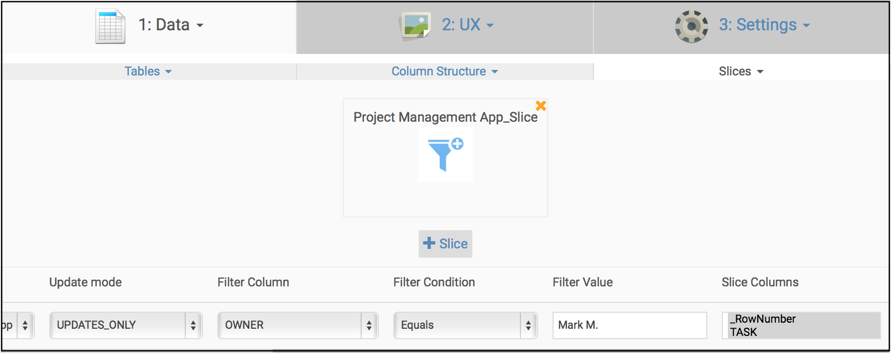

Do you need to make many similar apps-- identical in
structure, but just with different data for each?
Teams may need to have similar apps, but with different
data. There are two ways you can achieve this outcome: by
making an app for each user, or making one app with only the
information pertinent to each user.
- Make app copies using multiple spreadsheets: copy the app
repeatedly and switch it to a different spreadsheet for each
user. This is simple and gives you a lot of control. You can
make changes to each app if you want. But of course, it can
be tedious if you have many apps to create and maintain.
- Use row filters for a single app using a single
spreadsheet: row filters can achieve a similar effect with a
single app. Different users of the app can see different
subsets of the data. In particular, consider adding slices in
the Advanced Editor using the 'Matches the user name' or
'Matches the user email' condition to filter the right data
to the right user. Then send the same link to each user.
- Use row filters for multiple apps using a single
spreadsheet: row filters can achieve a similar effect with
multiple apps. You can slice the data as in the above
example, but instead of using multiple slices, just use one
slice per app per user. Then send each user their unique
app's link.

Apps with
different update permissions for different classes of
users
You can also build multiple apps with the same data, but
different update permissions for different classes of users. To
do this, see this article.
Related articles